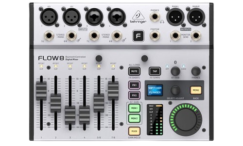

8-Input Digital Mixer
מיקסר דיגיטלי קומפקטי שמתאים להופעות קטנות, סטרימינג, פודקאסטים, חזרות ואולפן ביתי. ה־Flow 8 כולל 8 כניסות, אודיו דרך Bluetooth, שליטה מרחוק מהאפליקציה, שני מעבדי אפקטים וממשק USB Audio. לפי מפרט היצרן, הוא כולל גם פיידרים של 60 מ"מ ושליטה מאפליקציית FLOW למכשירי iOS ו־Android.
מחיר: 1,169 ₪
להזמנה